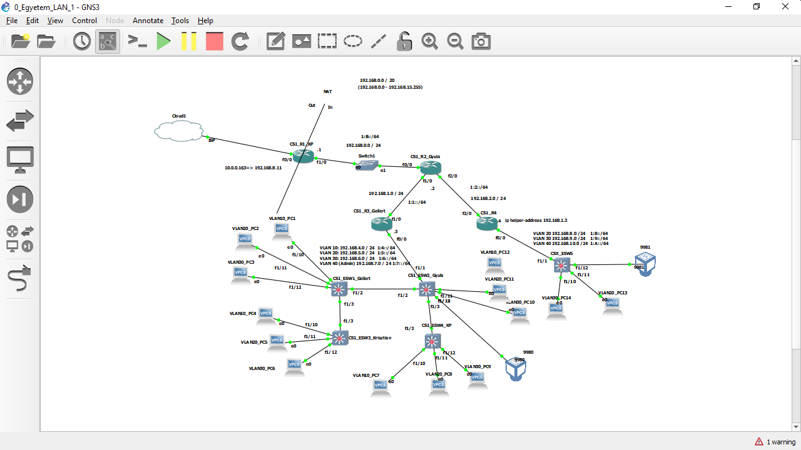

Graphical Network Simulator-3 (shortened to GNS3) is a network software emulator first released in 2008. It allows the combination of virtual and real devices, used to simulate complex networks. It uses Dynamips emulation software to simulate Cisco IOS.
GNS3 is used by many large companies including Exxon, Walmart, AT&T and NASA, and is also popular for preparation of network professional certification exams. As of 2015, the software has been downloaded 11 million times.
| Router | Interface | Address |
|---|---|---|
| CS1_R4 | f2/0 | 192.168.2.4 / 24 |
| CS1_R4 | f0/0.20 | 192.168.8.4 / 24 |